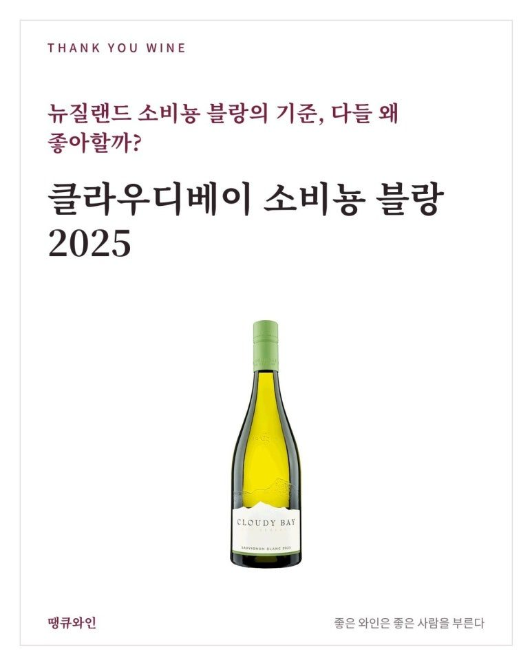
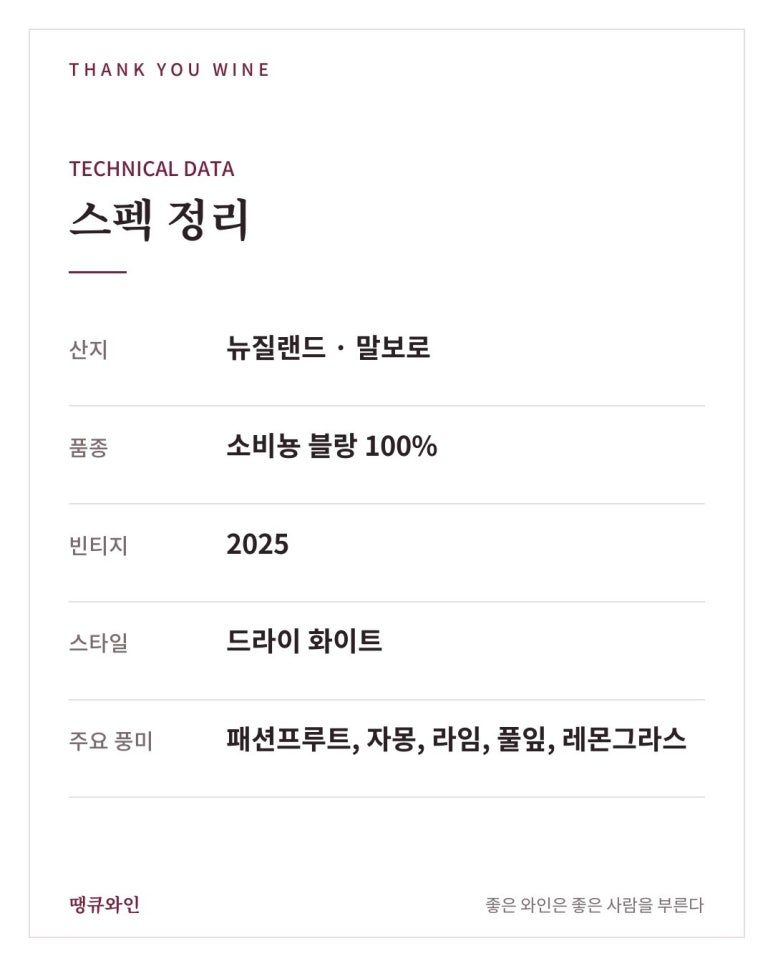
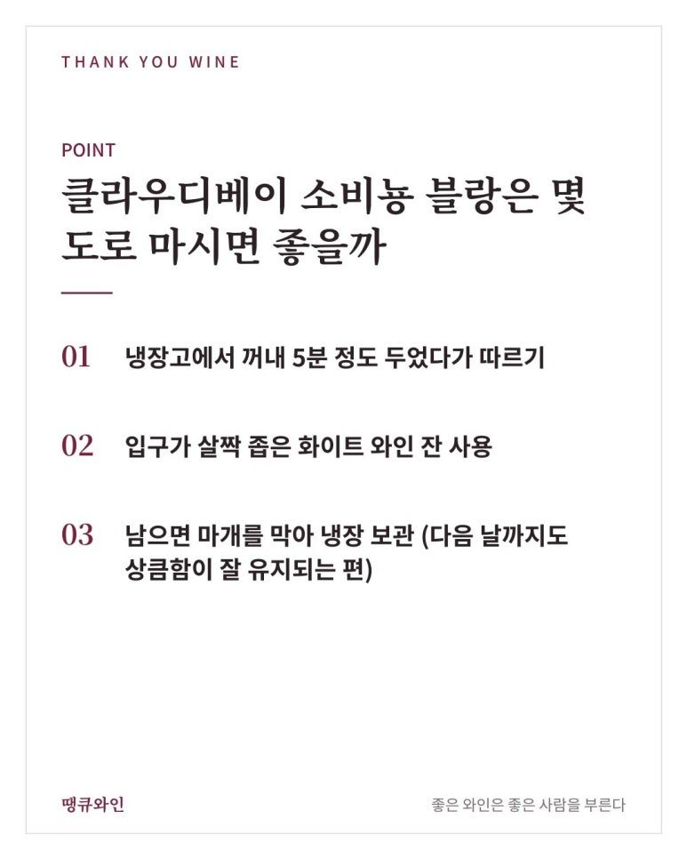
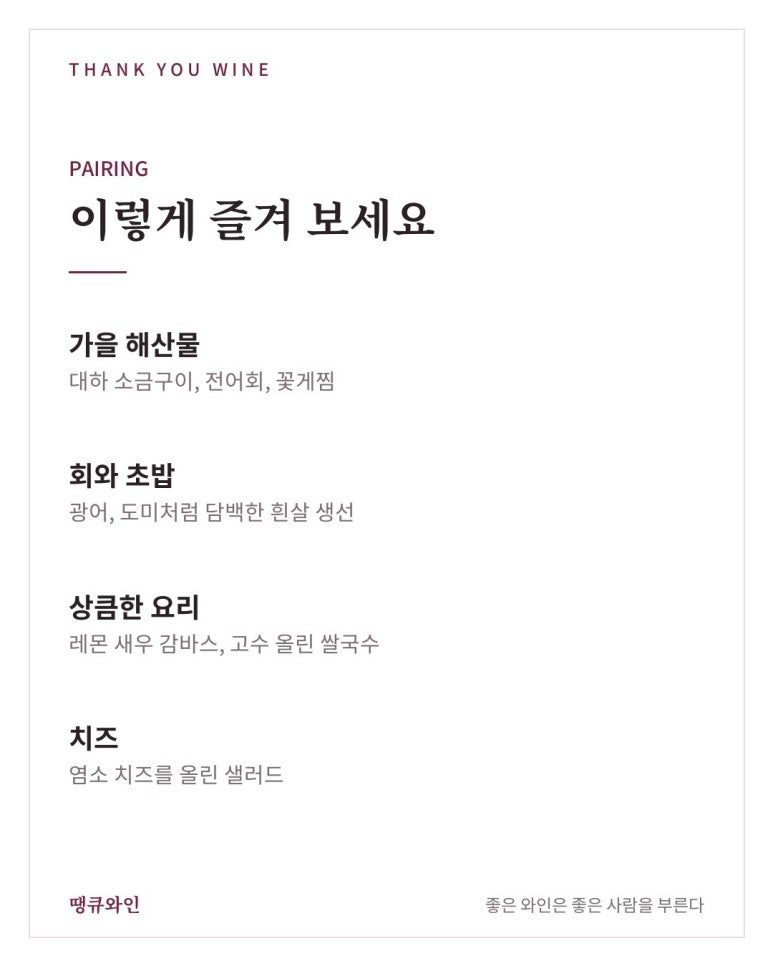
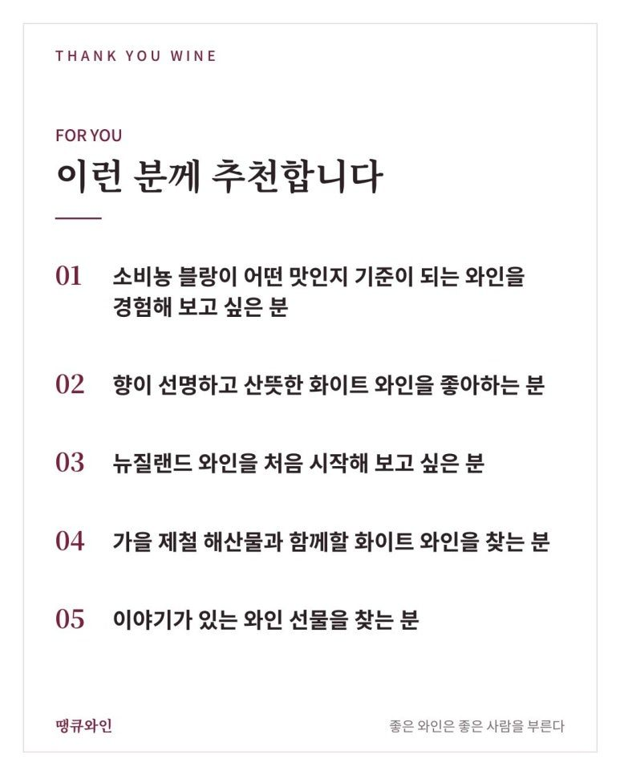
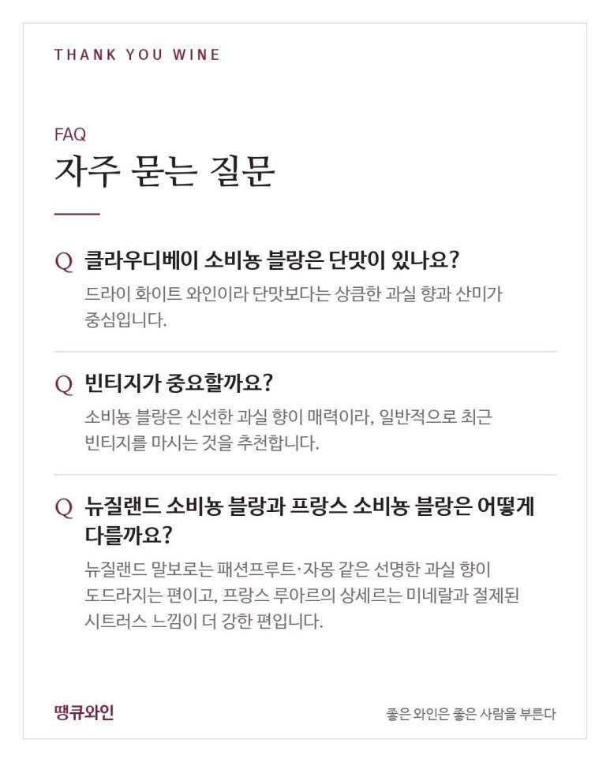

클라우디베이 소비뇽 블랑 2025
뉴질랜드 소비뇽 블랑의 기준, 다들 왜 좋아할까?
클라우디베이 소비뇽 블랑 2025는 뉴질랜드 소비뇽 블랑을 세계에 알린, 말보로 소비뇽 블랑의 기준 같은 와인이에요.
화이트 와인을 좋아하다 보면 한 번쯤 이런 이야기를 듣게 됩니다.
“소비뇽 블랑은 클라우디베이부터 마셔 봐야 한다.”
와인을 막 시작한 분도, 오래 즐겨 온 분도 클라우디베이 소비뇽 블랑 이야기가 나오면 비슷한 반응을 보이곤 합니다.
그렇다면 클라우디베이 소비뇽 블랑은 왜 이렇게 많은 사람들에게 사랑받는 걸까요?
오늘은 그 이유를 하나씩 정리해 보려고 합니다.
마침 땡큐와인에도 2025 빈티지가 새로 들어와, 이번 기회에 함께 정리했습니다.
무엇보다 중요한 포인트는 바로,
뉴질랜드 소비뇽 블랑을 세계에 알린, 말보로 소비뇽 블랑의 기준 같은 와인이라는 것.

한눈에 보는 클라우디베이 소비뇽 블랑
- 생산자
- 클라우디베이(Cloudy Bay), 1985년 설립
- 산지
- 뉴질랜드 말보로(Marlborough)
- 품종
- 소비뇽 블랑 100%
- 스타일
- 드라이 화이트 와인, 선명한 과실 향과 산뜻한 산미
- 이런 분께
- 소비뇽 블랑의 기준이 되는 맛을 알고 싶은 분
- 구매처
- 성수동 땡큐와인 매장 · 카톡으로 입고·가격 1:1 안내
선명한 과실 향 + 싱그러운 허브 향 + 시원한 산미
이 세 가지가 함께 느껴지는 것이 특징입니다.
클라우디베이 소비뇽 블랑은 이 말보로 스타일을 가장 정석적으로 보여주는 와인이라고 할 수 있습니다.
그만큼 첫 잔에서 품종의 개성이 분명하게 드러나는 와인입니다.
클라우디베이 소비뇽 블랑 테이스팅 노트
잔에 따르면 연한 볏짚색에 살짝 초록빛이 돕니다.
코를 가져가면 패션프루트와 자몽, 라임 같은 상큼한 과실 향이 먼저 올라옵니다.
그 뒤로 막 자른 풀잎과 레몬그라스 같은 싱그러운 향이 이어집니다.
입안에서는 시원한 산미가 중심을 잡아 주고, 마무리는 군더더기 없이 깔끔하게 떨어집니다.
2025 빈티지는 가장 최근 빈티지라 과실 향이 가장 생생할 때 만날 수 있습니다.
클라우디베이 소비뇽 블랑은 첫 향의 인상이 유난히 오래 기억에 남는 와인입니다.
클라우디베이를 한 번 마셔 본 분들이 다시 찾는 이유가 바로 이 첫인상이 아닐까 싶습니다.
CLOUDY BAY SAUVIGNON BLANC
- 산지: 뉴질랜드 · 말보로
- 품종: 소비뇽 블랑 100%
- 빈티지: 2025
- 스타일: 드라이 화이트
- 주요 풍미: 패션프루트, 자몽, 라임, 풀잎, 레몬그라스

클라우디베이 소비뇽 블랑은 몇 도로 마시면 좋을까?
8~10도 정도가 가장 좋습니다.
- 냉장고에서 꺼내 5분 정도 두었다가 따르기
- 입구가 살짝 좁은 화이트 와인 잔 사용
- 남으면 마개를 막아 냉장 보관 (다음 날까지도 상큼함이 잘 유지되는 편)

너무 차가우면 향이 닫히고, 조금 풀리면 향이 훨씬 예쁘게 열립니다.
클라우디베이 소비뇽 블랑과 어울리는 음식은?
산미가 또렷하고 향이 선명한 소비뇽 블랑은 해산물과 상큼한 요리에 특히 잘 어울립니다.
땡큐와인에서 추천한다면 지금 같은 10월에는 이런 메뉴와 함께 즐겨보겠습니다.
- 가을 해산물: 대하 소금구이, 전어회, 꽃게찜
- 회와 초밥: 광어, 도미처럼 담백한 흰살 생선
- 상큼한 요리: 레몬 새우 감바스, 고수 올린 쌀국수
- 치즈: 염소 치즈를 올린 샐러드

특히 대하 소금구이와의 조합을 추천드립니다.
고소하고 달큰한 새우살에 와인의 산미가 더해지면 입안이 깔끔하게 정리되면서 다음 한 입이 더 맛있어지거든요.
클라우디베이 소비뇽 블랑, 이런 분께 추천합니다
- 소비뇽 블랑이 어떤 맛인지 기준이 되는 와인을 경험해 보고 싶은 분
- 향이 선명하고 산뜻한 화이트 와인을 좋아하는 분
- 뉴질랜드 와인을 처음 시작해 보고 싶은 분
- 가을 제철 해산물과 함께할 화이트 와인을 찾는 분
- 이야기가 있는 와인 선물을 찾는 분

특히 “화이트 와인은 좋아하는데 뭘 골라야 할지 모르겠다”는 분들에게 가장 먼저 권해 드리는 와인입니다.
선물용으로도 활용도가 높습니다.
이름이 널리 알려져 있어 와인을 잘 아는 분께도 처음 접하는 분께도 부담 없이 건넬 수 있고, 쿡 선장과 클라우디 베이 이야기를 곁들이면 선물에 작은 이야깃거리가 하나 더해집니다.
집들이나 가을 캠핑, 해산물 모임처럼 여럿이 함께하는 자리에 한 병 들고 가기에도 좋습니다.

자주 묻는 질문
클라우디베이 소비뇽 블랑은 단맛이 있나요?
드라이 화이트 와인이라 단맛보다는 상큼한 과실 향과 산미가 중심입니다.
빈티지가 중요할까요?
소비뇽 블랑은 신선한 과실 향이 매력이라, 일반적으로 최근 빈티지를 마시는 것을 추천합니다.
뉴질랜드 소비뇽 블랑과 프랑스 소비뇽 블랑은 어떻게 다를까요?
뉴질랜드 말보로는 패션프루트·자몽 같은 선명한 과실 향이 도드라지는 편이고, 프랑스 루아르의 상세르는 미네랄과 절제된 시트러스 느낌이 더 강한 편입니다.
결국 클라우디베이의 매력은 ‘첫 향의 기억’입니다
클라우디베이 소비뇽 블랑은 뉴질랜드 소비뇽 블랑을 세계에 알린 와인이자, 지금도 그 스타일의 기준으로 이야기되는 와인입니다. 그래서 저는 이 와인을
“소비뇽 블랑이 궁금할 때 가장 먼저 열어 봐야 할 한 병”
이라고 소개하고 싶습니다.
프랑스 상세르의 소비뇽 블랑과 나란히 놓고 마셔 보면, 같은 품종이 산지에 따라 얼마나 달라지는지도 재미있게 느껴보실 수 있습니다.
선선한 가을밤, 클라우디베이 소비뇽 블랑 한 잔으로 소비뇽 블랑의 기준을 직접 만나보세요.
구매 전에 자주 묻는 질문
클라우디베이 소비뇽 블랑 2025는 어디서 살 수 있나요?
서울 성수동 땡큐와인 매장(성동구 성덕정길 109 2층)에서 구매할 수 있어요. 카카오톡으로 와인 이름을 보내 주시면 입고 상황과 가격을 1:1로 알려 드리고, 매장에서 바로 가져가시거나 미리 주문해 두실 수 있어요.
클라우디베이 소비뇽 블랑 2025 가격은 얼마인가요?
수입사 행사와 입고 시기에 따라 가격이 자주 바뀌어서 사이트에는 적지 않고, 카카오톡으로 1:1 안내해 드려요. 모임·선물용 수량 주문은 세금계산서 발행도 돼요.
이 글은 땡큐와인 네이버 블로그에 먼저 올린 글이에요.